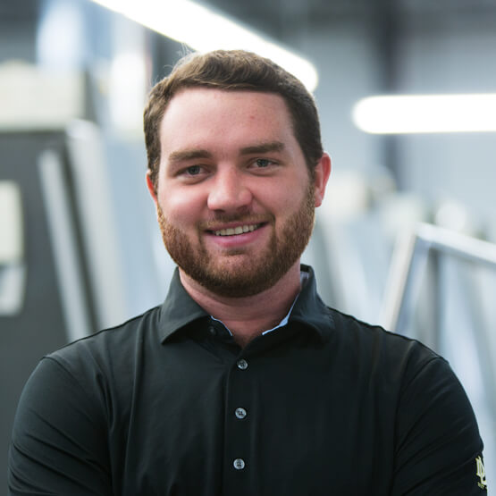
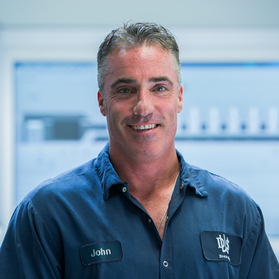
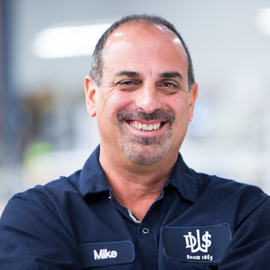
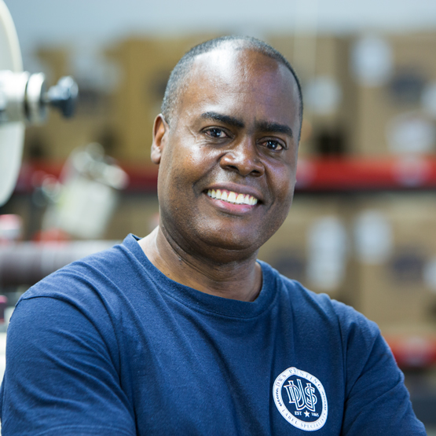
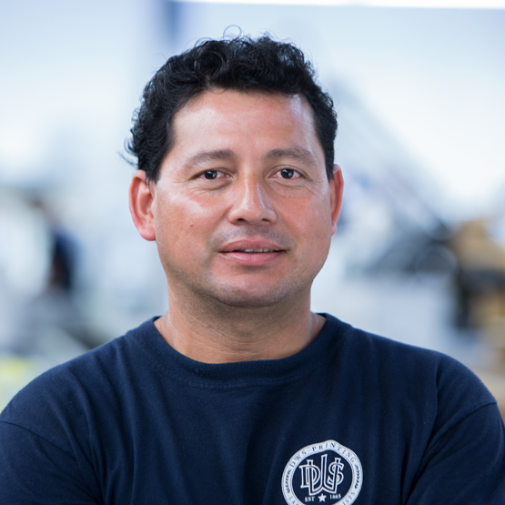
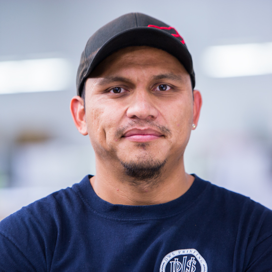
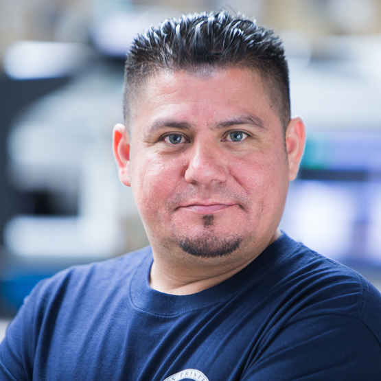
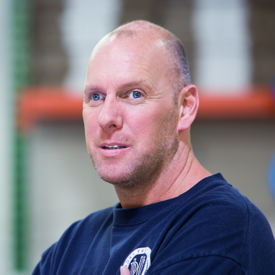
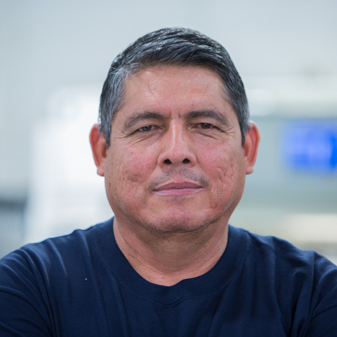

Kathy came to DWS in early 2013 with over 25 years of experience in the print ad sales space, working within the organic/natural products marketplace and with Martha Stewart. It took Kathy no time at all to learn labels and packaging and she now covers the entire Southern Atlantic region as well as New England.
Kathy graduated with a B.A. from Fairfield University. She enjoys time with her family and practicing yoga. She's also an avid concert-goer, and logged many Dead shows with her brothers.
Kathy Staib
Senior Director of Sales

Craig is DWS' first salesman outside the Staib family to join the company since the 1960's. Craig (aka "Kidd") is a consummate professional and he, Kathy and Andrew work closely together to keep up with our commitment to covering the map with DWS labels.
When he's not selling labels, Kidd is a skilled musician and can be found singing & playing a mean guitar on stage with two of his bands.
Craig Pace
Director of Sales & Marketing
Andrew is DWS' seasoned label sales veteran, with over 25 years experience in the label & packaging space. A team player and a born road warrior, Andrew (aka Elk) is also a history buff and is super proud of his Bostonian roots. We enjoy our Patriots vs Giants banter with the Elk. (Go Big Blue!)
Andrew Elkins
National Sales and Marketing

TJ is one of the newest members of the DWS team, and will spend the majority of his time heading up the new DWS Packaging division. He spent some time working in Germany before officially signing on as a fifth generation Staib at DWS.
He went to Chaminade High School in Mineola, NY and graduated from Villanova School of Business with a B.S. in Finance. Like his father, Tom, he enjoys cooking, travel, and watching sports, particularly the New York Giants and Villanova Basketball.
TJ Staib
Fifth Generation
Jeff's 25 plus years of experience in branding and packaging design as Senior Marketing & Creative Director with the Apple & Eve company, affords him the strategic creative insights that help our clients` brands flourish. His vision and leadership can bring your story to life, from concept to completion.
Jeff enjoys cycling, kayaking, and hiking with family to clear his mind and make room for the next big idea!
Jeff Damiano
Chief Brand Builder

Dorothy is a vital part of the 4-person DWS Client Service Department and the queen of DWS "local knowledge.” Loved by all, especially her clients, Dorothy is a 25-year veteran with the DWS family.
After hours, you'll likely find Dorothy at a Lynyrd Skynyrd concert or in Las Vegas killing it at video poker and slots.
Dorothy Econs
Client Service Representative

Sal has advanced up the ranks into a leading role in the DWS' Client Service Department. He is a guru in the art of attention to detail, keeping a watchful eye on your label specifications and making sure your labels are processed perfectly and delivered to you when and where you need them.
Like his colleague Dave T, Sal enjoys driving fast cars, really fast cars.
Sal Addotta
Client Service Representative

Josephine came to us with over 15 years of NYC advertising experience in Account Management, making her a perfect fit for DWS’ Client Services Team. She’s able to manage your orders and artwork through to the perfect final product, while navigating challenging deadlines and being proactive. Josephine is a professional multi-tasker who also works closely with Andy Staib on all of DWS’ marketing initiatives.
Josephine enjoys all things food related – which includes wine, of course - and spending quality time with her two sons and husband.
Josephine Cantwell
Marketing Director / Client Services

John has over 20 years of experience in printing and graphics and oversees DWS' Quality Assurance programs. He is your "Go-To-Guy" with any and all artwork-related questions, file format guidelines, or general tech inquiries.
He loves playing floor hockey and enjoys all kinds of music, especially jam bands and the good 'ol Grateful Dead. He's also an exceptional guitar player.
John Gulino
Senior Technical Director

Dave (aka Dave T) is the man behind the curtain and a magician of sorts who oversees all DWS operations. He the master of "Making Miracles Happen". With over 20 years of experience here at DWS, Dave T is The Man.
He loves cars and has even been known to drive at speeds in excess of 170 mph - on a racetrack, of course.
Dave Tascarella
VP of Operations

Eric joined DWS in January of 2014 and came to us with over 30 years of experience in printing. He oversees all production and spends the better part of his day ensuring that the flow of work running through the plant is being processed smoothly and efficiently.
Eric is also an avid NY Jets fan and loves any and all outdoor activities, especially boating and hiking.
Eric Sorensen
Plant Manager

Craig or “Mr. Smith” as we like to call him, is our Controller/CPA who keeps a watchful eye on the numbers. He attended Long Island University and has been a CPA for over 15 years. Mr. Smith may very well hold the title of “Team Member with the Best Sense of Humor,” though he has some competition from the more dry Dave T.
He also enjoys riding motorcycles.
Craig Smith
Controller

Courtney works under the guidance of Mr. Smith to ensure that DWS pays its bills on time and gets paid on time too! Ms. Casey is also DWS' internal event planner, initiating all company-wide gatherings and events.
Courtney is an excellent cook and her favorite holiday is Halloween.
Courtney Casey
Assistant Controller

One of the two lead pressmen who run our Heidelberg 8/Color offset press, aka “The Beast,” John knows The Beast like the back of his hand and has been known to break production efficiency records on a regular basis, but never at the expense of the work that is entrusted to him.
John enjoys hiking, weight lifting, crossfit, and spending time with his two daughters.
John O’Brien
Lead Offset Pressman

The other half of the two-man Dream Team who runs The Beast, Mike relocated all the way from North Carolina to come join the DWS Team. In addition to providing world-class printing quality, Mike has a great attitude, always a smile on his face.
Mike is a faithful New York Jets fan, and proudly wears his J-E-T-S green at DWS’ annual Team Spirit Day in September.
Mike Namarato
Lead Offset Pressman
You may recognize Jorge from his starring role in the DWS Our Story film that lives here on our website. Jorge joined DWS with over 20 years experience in flexographic printing and he leads the DWS Flexo Department. He proudly runs our Omet 10/color press, aka “Beauty,” along with Felix and Ian.
In his spare time, Jorge likes Salsa dancing, all kinds of music, a good cigar, and the New York Yankees. Jorge is a team player through and through.
Jorge Medina
Lead Flexographic Pressman

Felix is one of our three highly skilled flexographic pressmen and an expert at producing the finest pressure sensitive, shrink sleeve, and roll-fed labels.
A certified Black Belt, Felix practices martial arts on a regular basis, and also enjoys race cars and playing the drums when he's not schooling someone in the dojo.
Felix Thomassine
Lead Flexographic Pressman
Denise joined the DWS Client Service Department in 2016 and is a welcome addition to the team. She comes to us with 10 years experience in the label printing world and prior to that she ran one of Long Island’s most prestigious restaurants, Piccolo in Huntington.
Denise appreciates Mother Nature, she never takes a beautiful sunrise or sunset for granted, and she’s not afraid to get her hands dirty in the yard. After all that hard work, Denise likes to sit back with a nice glass of wine or two with friends and family.
Denise Ravella
Client Services / Assistant Flexo Manager

Another one of DWS' behind the curtain guys, Jason (aka "J") is the liaison between our Art Department and our Press Room. He handles all impositions and he generates every press plate, for every job.
In his free time, J can be found playing hockey, watching sports or catching a movie (probably Star Wars).
Jason Attard
Pre-Press Production

A 30-year veteran in printing and graphics, Rick one of the newest members of the DWS Team. His responsibilities include pre-flighting all incoming files, color retouching, and processing every label that goes through the DWS Art Department.
Rick enjoys running, playing football and bowling.
Rick Hughes
Pre-Press Production
One of the “behind-the-scenes” guys in DWS’ Pre-Press department, Dan is the master of ensuring that all our clients’ precious art files are properly prepared to go to print. Dan has over 25 years experience in color correcting, digital retouching, and traditional pre-press processes.
In his spare time Dan likes fishing, camping, kayaking, golfing, and long distance bike riding. He’s a New York sports fan through and through - Giants, Yankees, and Knicks.
Dan Daly
Pre-Press Production

Marie is your key contact as it relates to the shipping and delivery of your orders. We pride ourselves on making really fabulous labels, but when we're done making all those labels, Marie sees to it that they get where they're supposed to be, on time, every time.
You would never know it, but Marie is a proud grandparent and loves spending time with her 4 grandchildren.
Marie Guntis
Shipping Manager

Working in tandem with Marie, we can always rely on Luis to tackle any project in the Production and Shipping Departments. The loading bay is his domain and he makes a point to keep it running like clockwork.
He's also an amazing soccer player.
Luis Estrada
Shipping & Receiving

Ricky may be one of DWS’s hardest workers – he can always be found on our dock palletizing all your cartons, he’s always there to help a hand.
Rumor has it that Ricky may be a better soccer player than his big brother Luis!
Ricky Estrada
Shipping & Receiving
Our "Director of First Impressions,” Christina is the first face you will see when you come to DWS and you will always get a warm and friendly welcome. Christina also works tirelessly to assist our Client Service Department with their day-to-day tasks.
Christina is an avid New York Rangers fan and isn’t shy to sport her Rangers jersey at work, despite the diehard Islanders fans here at the office. She also enjoys an occasional tasty craft beer and is a HUGE Led Zeppelin fan.
Christina Trivelli
Administrative Assistant

Carlos Estrada Jr.
Press Operator
Edwin Garcia
Press Operator

Oscar Morales
Flexo Finishing Operator
Mark Soorujbally
Flexo Finishing Operator

Mike Gloster
Lead Cutter

Carlos Estrada Sr.
Lead Cutter